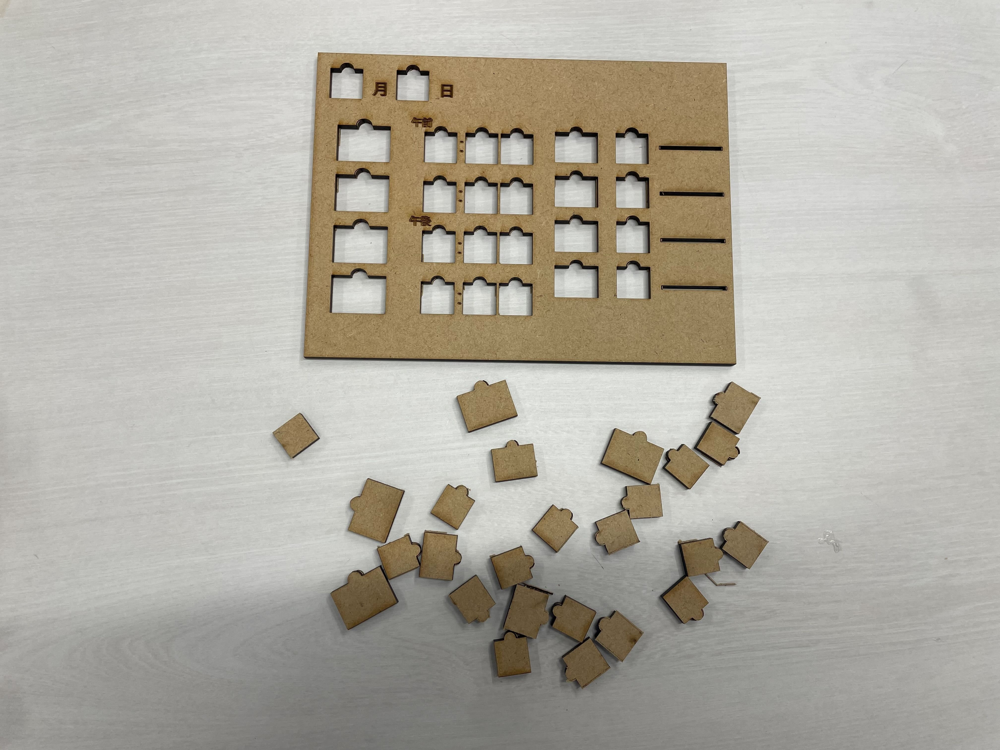
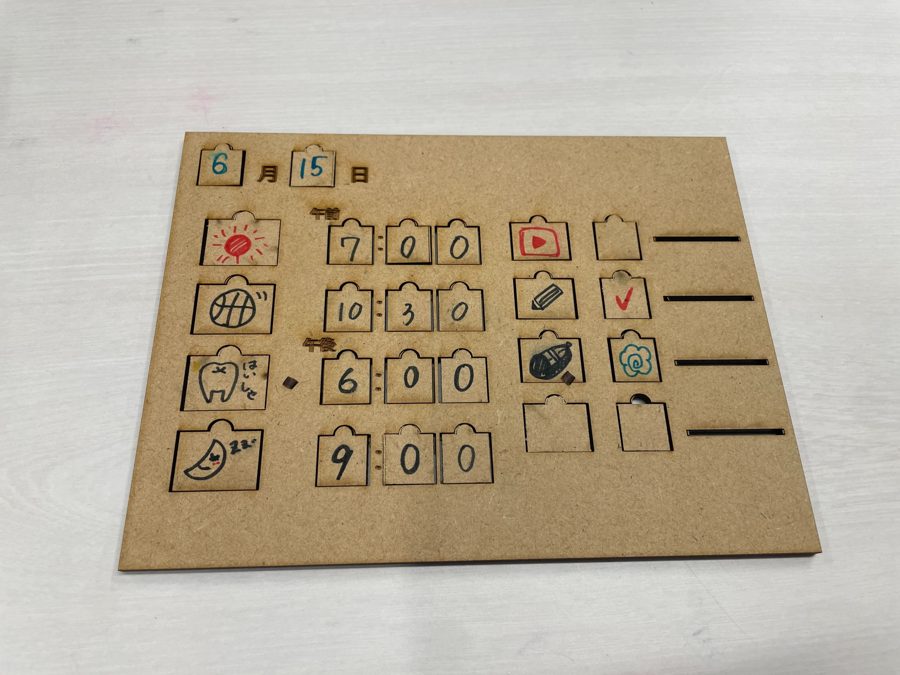
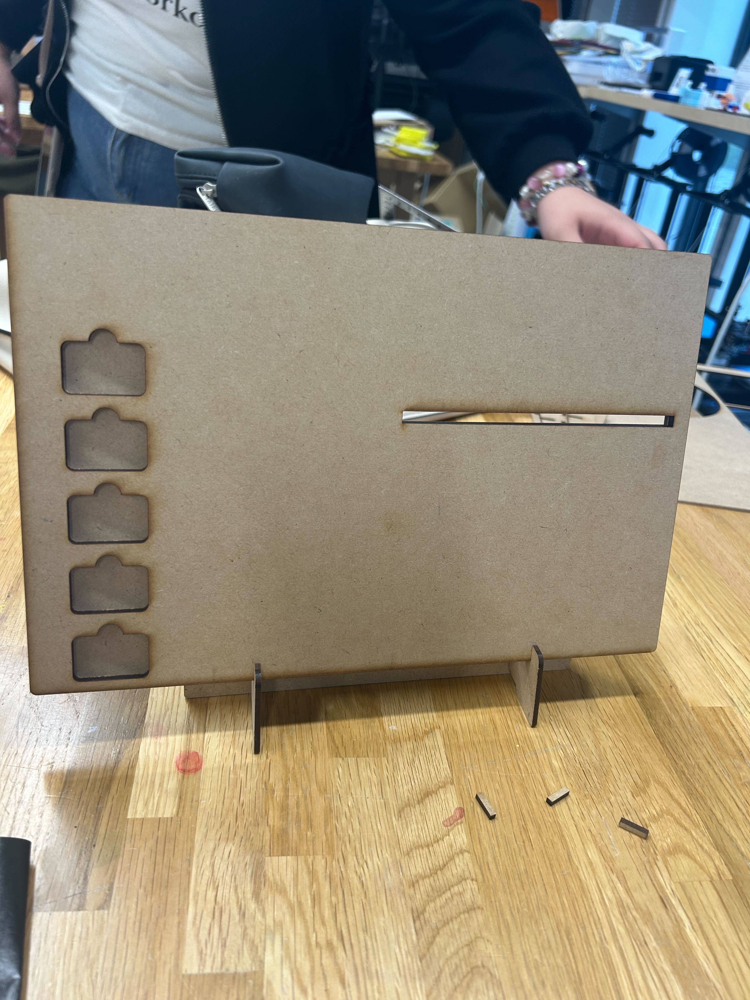
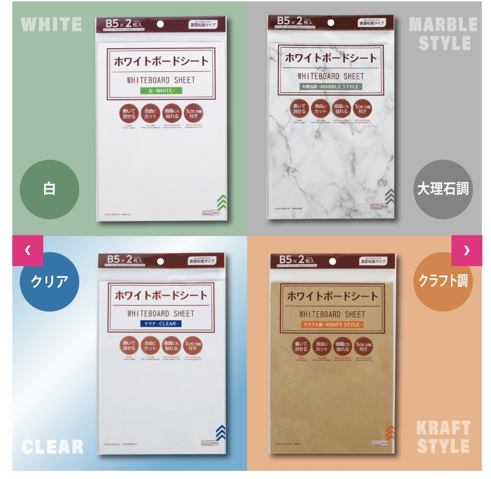
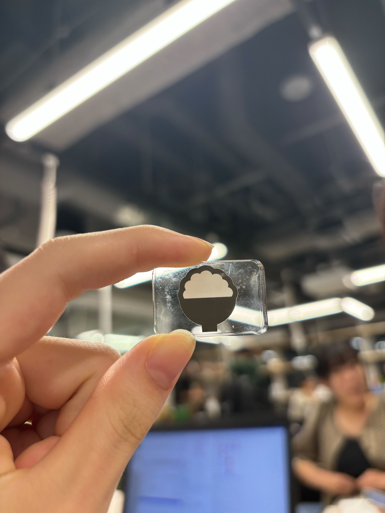
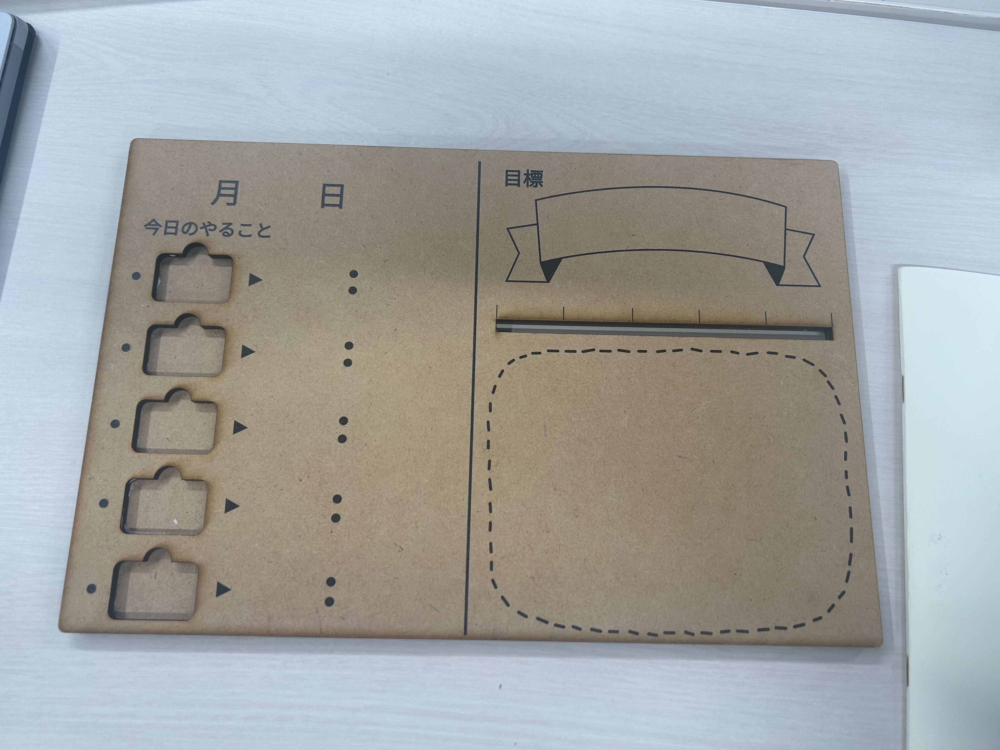
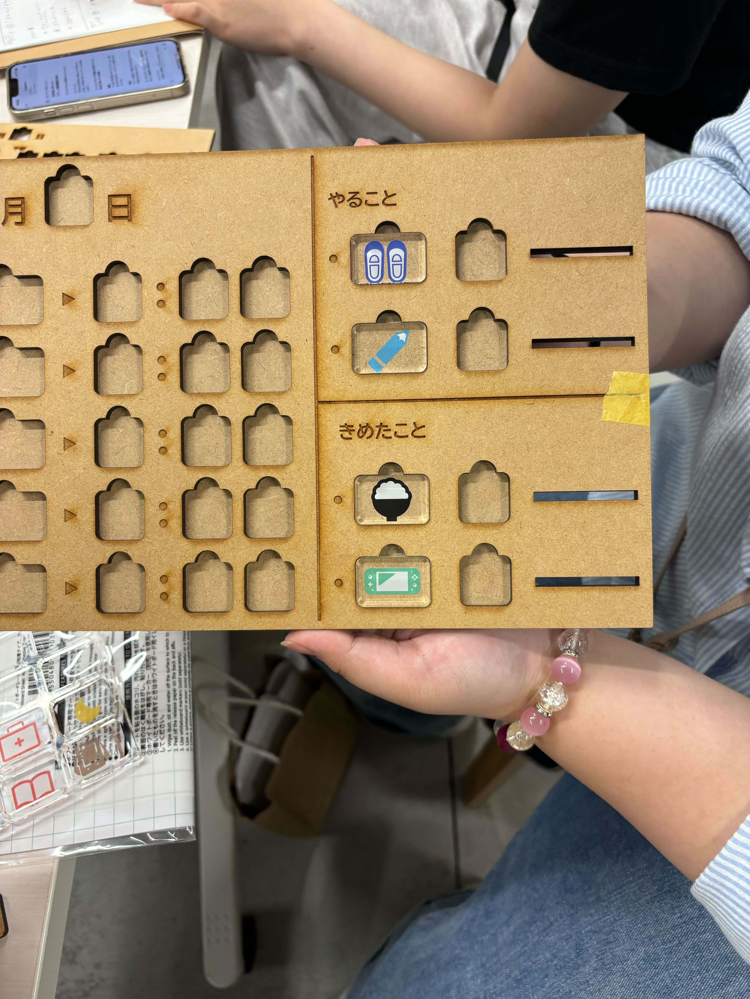

★制作@時間管理
・悩み
子どもがYouTubeを見続けてしまい、
時間管理ができない
・解決策→試作
朝起きた時点でその日にやることを決める
→試作(第1弾_6/14ミニサイズ)
日付やその日の予定のピースとはめるパネルを用意。
朝にはめ込んで、その日のYouTubeの見れる時間や宿題をする時間を決める。

実際に書き込んでみるとこんな感じ↓

一番右の線みたいなところにはスライドして、達成度が視覚化できるようなものをつけてみる予定。
他にも解決策をいくつか出したかったが、時間の関係でできなかった
・試作→改善点
・ボードサイズの調整
試作ではボードの大きさが小さかったので、200×300に変更

・メモ機能の追加
より自由性のあるものにするために、ダイソーに売っている「ホワイトボードシート」を利用し、
ボードそのものに書けるようにすることにした。
↓この画像のうちの「クリア」を使用

・UVプリントの利用
ピースに試作の段階では書き込む方式でいたが、UVプリントをした方が見た目が良いため、アイコンをプリントした。
またボードの方にもプリントし、その上からホワイトボードシートを貼ることでより自由にメモが書けるようになった


・使用素材の変更
MDFを基本的に使用する方向でいたが、はめ込むピースはアクリル（5mm）で作るとMDFのボードにはめたとき、
厚みの関係で少しでっはることで「ボタン感」がでて可愛くなることを発見した

ただ、ホワイトボードシートをわざわざ使わなくても、アクリル板であればホワイトボードと同じなので、
裏はNDFのままだが、表面はアクリル（2.5mm）を使用してみたものも製作した。
動画の制作
テーマは、”あるある”
日常生活の中であるよねという共感→解決策